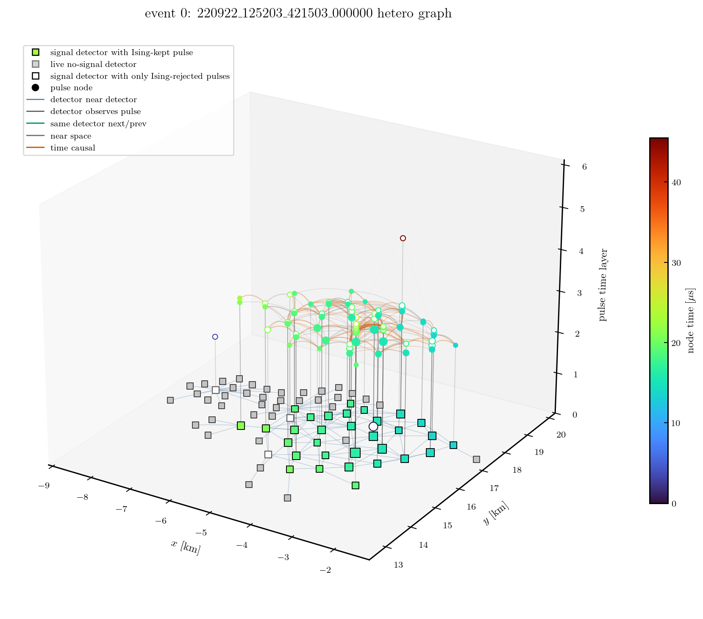

Heterogeneous DST 再構成 workflow
heterogeneous path は、学習後に DST を直接再構成するための現行経路です。
graph の物理的な定義と HDF5 export は dstio.tale.graph に寄せます。
この repository では CLI orchestration、HDF5 読み込み、model input 変換、学習、診断、直接推論を扱います。
モデル内部の詳しい説明は Heterogeneous model の詳しい説明 にあります。 そのページでは、PyTorch / PyG 公式ドキュメントの書き方に合わせて、この repository で実際に使う tensor、encoder、relation attention、readout、loss head、直接推論の流れを説明しています。
最初の図は workflow 図です。HDF5 学習 cache 経路と DST 直接再構成経路を分けて示します。

detector waveform は detector node に 1 回だけ保存します。pulse node は pulse_detector_index と pulse_bounds を持ち、同じ waveform を pulse node ごとに複製せずに参照します。
Graph schema
次の図は、diagnostic notebook で作成した実 event の GraphEvent 表示です。
抽象的な schema 図を見る前にこの図を見ると、detector node、pulse node、typed edge が
1 event の中でどのように見えるかを把握しやすくなります。
{kind=link}

実 event の heterogeneous graph 表示です。四角は detector node で、検出器位置に置かれます。 塗りつぶしの signal detector は Ising-kept pulse を1つ以上持つ detector です。 灰色四角は live no-signal detector、白抜き四角は Ising-rejected pulse candidate だけを持つ detector です。 丸印は pulse node で、対応する detector の上に pulse time layer として置かれます。 青線は detector--detector の近接 relation、灰色の縦線は detector と pulse の対応、 緑線は同一 detector 内の連続 pulse、灰色の pulse--pulse 線は near-space relation、 橙色の pulse--pulse 線は time-causal subset です。
下の schema 図は、同じ情報を単純化した graph として示します。
1つの GraphEvent の中で使う node type と edge type を graph として示します。
detector node と pulse node は別の node type です。
detector waveform は detector node 側に 1 回だけ保存し、pulse node は pulse_detector_index と pulse_bounds で waveform の一部を参照します。
Ising-kept pulse candidate と Ising-rejected pulse candidate はどちらも ML graph に残します。

detector-detector、pulse-pulse、detector-pulse relation は別 edge type です。Ising rejected pulse candidate は hard drop せず、annotation付きで入力に残します。
dstio.tale.graph.iter_graphs は
tale_sd_hetero_ising_pulse_detector_graph_v3 の GraphEvent を返します。
ML graph の標準は node_policy="all_candidates_with_ising" です。
Ising で rejected になった pulse candidate も graph から消さず、Ising annotation feature を持たせます。
node_policy="ising_kept" は reconstruction-cleaned subset が必要な時だけ使います。
node と relation は次の通りです。
種類 |
保存する field |
|---|---|
detector node |
|
pulse node |
|
relation |
|
v3 schema の pulse__time_causal__pulse は、全距離の緩い compatible-pair relation ではありません。
distance <= 1.5 km、abs(dt) <= distance / c + 2 FADC bins、Ising
raw_weight >= 0.2 を満たす near-space subset です。
ただし、この relation は新しい dataset ごとに edge density を確認します。
GNN 側では graph edge を作成・接続・削除しません。
relation 定義の ablation が必要な場合は、dstio / export-hetero 側で別 graph dataset として作成します。
v3 では detector-level の Ising summary column として
detector_has_ising_kept_pulse, detector_ising_kept_pulse_count,
detector_ising_removed_pulse_count が追加されています。
これにより、Ising-kept pulse を持つ detector と、Ising rejected candidate pulse だけを持つ detector を区別します。
rejected pulse node は ML input から hard drop しません。
同じ v3 schema の pulse_arrival_usec_rel は pulse node の時刻です。
上下層 rise の平均ではなく、上下層 rise の早い方である pulse onset から作ります。
0 点は event 内の最初の accepted graph pulse candidate です。
Ising rejected candidate pulse も ML graph に残すため、Ising-kept subset を基準に時刻を引き直しません。
detector_trigger_usec_rel は、互換性のため名前を維持していますが、
値の意味は detector node time です。
cleaning="ising" では、その detector に属する最初の ising_keep = 1 pulse onset を、
pulse_arrival_usec_rel と同じ 0 点で表します。
candidate/rejected pulse や waveform が残っていても Ising-kept pulse がない detector は、
detector_trigger_usec_rel = 0、detector_arrival_time_valid = 0 です。
detector waveform の開始時刻ではありません。
waveform の時刻対応が必要な場合は、pulse_detector_index と pulse_bounds で
pulse と detector waveform を対応させます。
core-relative pulse feature は Ising reference core がある時だけ有効です。
そのため、学習用 export では通常 --require-reference-core を使います。
Training cache path
export-hetero は繰り返し学習で読むための HDF5 graph shard を書きます。
この HDF5 は cache であり、最終的な再構成 interface ではありません。
balanced MC export では、source selection、graphable event の refill、
graph 作成、HDF5 書き込みはすべて
dstio.tale.graph.write_balanced_graph_h5 が担当します。
GNN repository 側では edge のつなぎ替えや refill logic の再実装をしません。
DST
-> talesd-gnn export-hetero
-> dstio.tale.graph.write_balanced_graph_h5
or dstio.tale.graph.write_graph_h5
-> heterogeneous HDF5 shards
train-hetero はこの shard を読み、train split で scaler を fit し、heterogeneous model を学習して checkpoint を保存します。
既定 architecture は hetero_attention です。detector / pulse relation ごとの multi-head attention と、detector / pulse type 別 attention readout を使います。
HGSampling は使いません。TALE では 1 event を 1 graph として丸ごと扱い、detector、pulse、waveform、Ising rejected pulse の情報を sampling で落としません。
最初の waveform encoder 比較では、6本の reco+mass size-sweep job を WAVEFORM_ENCODER=transformer で投げます。cnn-gru は、その結果を見て採用条件を決めた後に比較します。
Direct reconstruction path
reconstruct-dst は DST を直接読みます。
train-hetero と同じ graph schema と checkpoint scaler を使い、中間 HDF5 graph を書きません。
DST
-> talesd-gnn reconstruct-dst
-> dstio.tale.graph.iter_graphs
-> hetero_data.sample_to_hetero_data
-> hetero_attention checkpoint
-> reconstruction CSV
heterogeneous model を学習した後の大量 data / MC 一回通し再構成では、この direct path を使います。